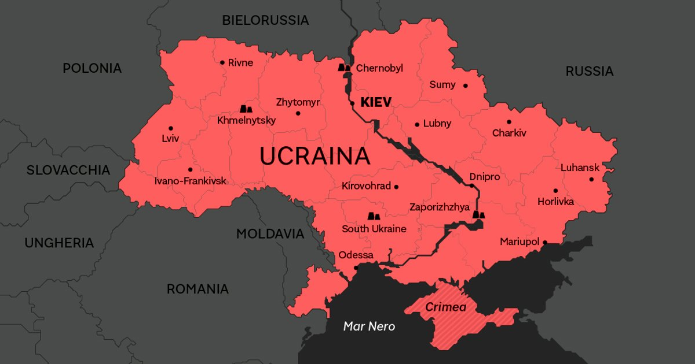
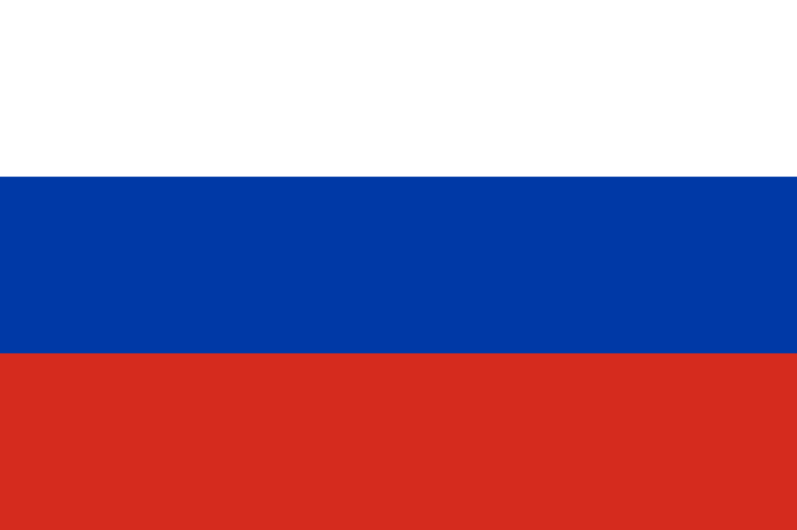
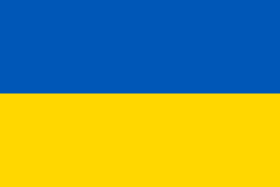
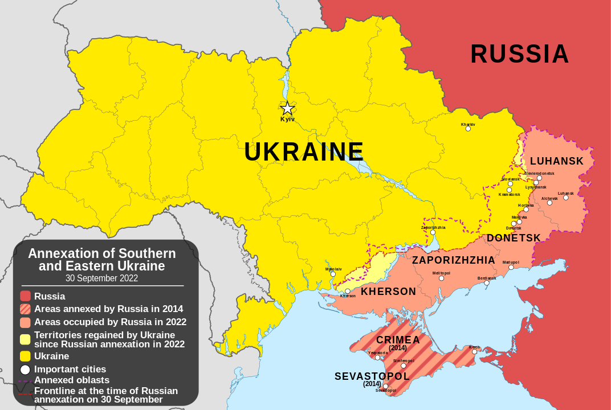
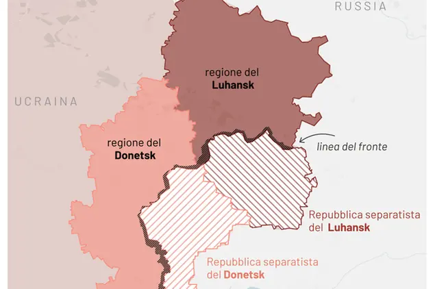

Conflitto Ucraino - Russo
La guerra tra Russia e Ucraina è un conflitto che sta durando da molti anni e ha causato molte vittime. La causa principale della guerra è l'annessione della Crimea da parte della Russia nel 2014. Questo ha causato molte tensioni tra i due paesi e ha portato alla formazione di gruppi separatisti filo-russi nell'est dell'Ucraina. L'Ucraina cerca di riprendere il controllo di questa regione, accusando la Russia di invadere il suo territorio e di fornire supporto ai separatisti. In risposta, la Russia nega queste accuse e sostiene di proteggere i diritti dei russi che vivono in Ucraina. La situazione è molto complessa e non c'è una soluzione facile a questo conflitto. Ci sono stati molti sforzi internazionali per cercare di risolvere il problema, ma finora non sono stati molto efficaci.

Nel 2014...


Nel 2022 la Russia ha invaso l'Ucraina affermando che l'operazione militare speciale mirava a denazificare il Paese e proteggere i cittadini russi. La guerra in Ucraina è stata caratterizzata da un conflitto aperto tra separatisti filorussi ed esercito ucraino nella regione del Donbass e dall'occupazione russa della Crimea. La guerra ha causato molte vittime e ha portato a una grave crisi umanitaria.
Nel 2022...

Il Donbass

Il Donbass è una vasta regione situata nell'est dell'Ucraina, comprendente principalmente le province di Donetsk e Luhansk. Quest'area è salita alla ribalta internazionale negli ultimi anni a causa di un complesso e doloroso conflitto armato che si è sviluppato tra le forze governative ucraine e i gruppi separatisti filo-russi. La situazione ha portato a una serie di gravi conseguenze umanitarie, con migliaia di persone costrette a lasciare le proprie case a causa degli scontri e delle difficoltà economiche.